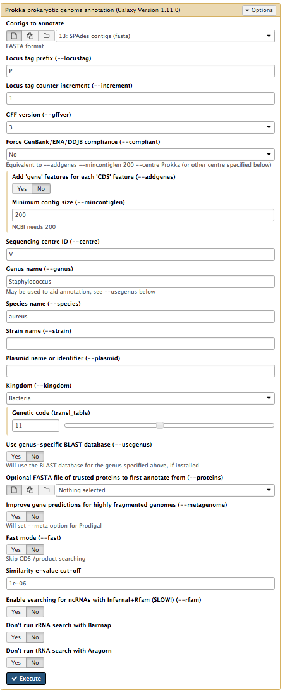

Genome annotation with Prokka
Overview
QuestionsObjectives
- How to annotate a bacterial genome?
- How to visualize annoted genomic features?
Requirements
- Load genome into Galaxy
- Annotate genome with Prokka
- View annotations in JBrowse
Time estimation: 1h
Introduction
In this section we will use a software tool called Prokka to annotate a draft genome sequence. Prokka is a “wrapper”; it collects together several pieces of software (from various authors), and so avoids “re-inventing the wheel”.
Prokka finds and annotates features (both protein coding regions and RNA genes, i.e. tRNA, rRNA) present on on a sequence. Note, Prokka uses a two-step process for the annotation of protein coding regions: first, protein coding regions on the genome are identified using Prodigal; second, the function of the encoded protein is predicted by similarity to proteins in one of many protein or protein domain databases. Prokka is a software tool that can be used to annotate bacterial, archaeal and viral genomes quickly, generating standard output files in GenBank, EMBL and gff formats. More information about Prokka can be found here.
Agenda
In this tutorial, we will deal with:
Import the data
Prokka requires assembled contigs.
Hands-on: Obtaining our data
Make sure you have an empty analysis history. Give it a name.
Starting a new history
- Click the gear icon at the top of the history panel
- Select the option Create New from the menu
Import Sample Data.
- Obtain data directly from Zenodo:
- Download
contigs.fasta- Upload the file to your history.
Annotate the genome
Now we will run the tool called Prokka.
Hands-on: Annotate genome
- Prokka with the following parameters (leave everything else unchanged)
- contigs to annotate:
contigs.fasta- Locus tag prefix (–locustag): P
- Force GenBank/ENA/DDJB compliance (–compliant): No
- Sequencing Centre ID (–centre): V
- Genus Name: Staphylococcus
- Species Name: aureus
- Use genus-specific BLAST database: No
- Your tool interface should look like this:
- 
- Click Execute
Examine the output
Once Prokka has finished, examine each of its output files.
- The GFF and GBK files contain all of the information about the features annotated (in different formats.)
- The .txt file contains a summary of the number of features annotated.
- The .faa file contains the protein sequences of the genes annotated.
- The .ffn file contains the nucleotide sequences of the genes annotated.
View annotated features in JBrowse
Now that we have annotated the draft genome sequence, we would like to view the sequence in the JBrowse genome viewer. First, we have to make a JBrowse file. Then, we can view it within Galaxy.
Hands-on: Visualize the annotation
- Search for JBrowse and run it with the following parameters
- “Reference genome to display” to
Use a genome from history“Select the reference genome” to
Prokka on data XX.fna.This sequence will be the reference against which annotations are displayed
- “Produce Standalone Instance” to
Yes- “Genetic Code” to
11: The Bacterial, Archaeal and Plant Plastid Code- “JBrowse-in-Galaxy Action” to
New JBrowse Instance- “Track Group”
- We will now set up one track - each track is a dataset displayed underneath the reference sequence (which is displayed as nucleotides in FASTA format).
We will choose to display the annotations (the Prokka.gff file).
- Track 1 - sequence reads: Click on
Insert Track Groupand fill it with
- “Track Cateogry” to
gene annotations- Click on
Insert Annotation Trackand fill it with
- “Track Type” to
GFF/GFF3/BED/GBK Features- “GFF/GFF3/BED Track Data” to
Prokka on data XX:gff- “Track Visibility” to
On for new users- “JBrowse Track Type [Advanced]” to
Canvas Features- Click on “JBrowse Styling Options [Advanced]”
- “JBrowse style.label” to
product,name,id- “Track Visibility” to
On for new users- Click Execute
A new file will be created in your history, this contains the JBrowse interactive visualisation. We will now view its contents and play with it
Inspect the
JBrowse on data XX and data XX - Completefile by clicking on the eye iconThe JBrowse window will appear in the centre Galaxy panel.
Display all the tracks and practice maneuvering around
- Click on the tick boxes on the left to display the tracks
- Select contig 1 in the drop down box. You can only see one contig displayed at a time.
- Zoom out by clicking on the
minusbutton to see sequence reads and their coverage (the grey graph)- Zoom in by clicking on the
plusbutton to see annotations.- JBrowse displays the sequence and a 6-frame amino acid translation.
- Right click on a gene/feature annotation (the bars on the annotation track), then select View Details to see more information.
- gene name
- product name
- you can download the FASTA sequence by clicking on the disk icon.

Key points
- Prokka is a useful tool to annotate a bacterial genome.
- JBrowse can be used to inspect the annotation of a genome.
Useful literature
Useful information regarding this type of analysis with descriptions and paper references for the tools used in this tutorial, and literature for this analysis techniques and interpretations can be found here.
Congratulations on successfully completing this tutorial!
Feedback
Please take a moment and provide your feedback on this tutorial. Your feedback will help guide and improve future revisions to this tutorial. Feedback Form